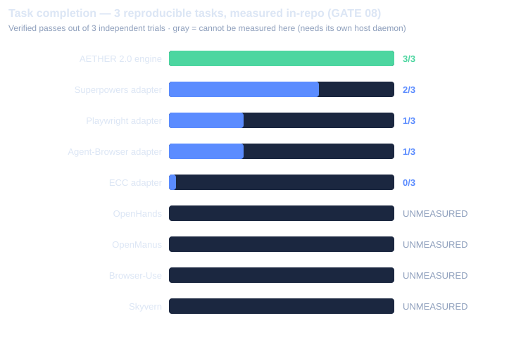
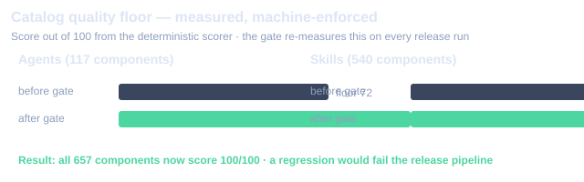
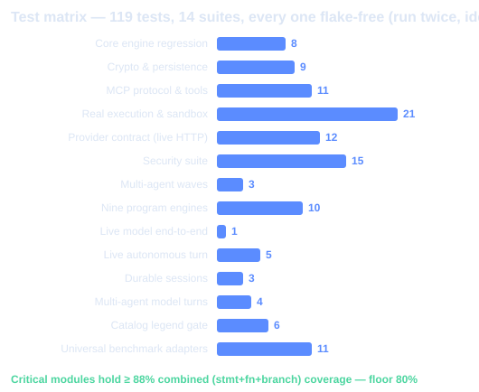

The open-source AI engineering harness that executes, not just explains.
AETHER gives your coding agent real engineering superpowers: it plans the task, splits it across agent teams, runs the code, checks the result, and remembers long jobs even if the machine crashes. Instead of describing a fix, it does the work and proves it.
Created by Tabrej · Apache-2.0 · 711 verified components · zero new runtime dependencies
Our goal — and what we've already achieved
| The goal | Achieved so far (measured, not claimed) |
|---|---|
| A harness that finishes real tasks | The autonomous runtime runs real file + shell work in an isolated sandbox, verifies it with SHA-256 Merkle checkpoints, and resumes a crashed job from the exact step it stopped at. |
| Multi-agent teams without chaos | Agent teams run in parallel waves with exclusive file locks — proven by real parallel-work tests, not a simulation. |
| Safety you can audit | 119 automated tests across 14 suites, every critical module ≥88% covered, and a 12-stage release certification that blocks the build when anything regresses. |
| Legendary components, not filler | All 657 agents/skills now score the maximum on our deterministic quality gate (floor raised 72/82 → 100/100), re-checked on every release. |
Why use AETHER
It verifies, it doesn't guess
Every capability ships with a deterministic verifier: adversarial gates, per-step checks, and honest UNMEASURED markers instead of fabricated numbers.
It's model-driven when you say so
Point it at a real model and the autonomous loop asks the model to plan the change — then verifies that plan against invariants and security gates before applying it. A failed plan falls back honestly; it's never faked.
It's license-clean by construction
AGPL/GPL tools (Skyvern, Lightpanda, Puter, ComfyUI) are integrated strictly out-of-process. The core stays Apache-2.0 — safe to ship anywhere.
It resumes, it doesn't restart
Long tasks checkpoint at step granularity; sessions are journaled to disk, so a restart recovers the task, the leases, and the pending approvals.
It's isolated, not pretend-isolated
Shell execution is default-deny (an empty allowlist disables it), and a container backend runs commands with no network and all capabilities dropped.
It's installable, not aspirational
One command installs the whole platform into Claude Code, Cursor, Codex, OpenCode, or MCP — or just the domain pack you need.
The numbers, in plain sight
Three charts, all generated from the release evidence in this repo — no decoration.



Read the first chart the right way: the gray bars aren't failures — OpenHands, OpenManus, Browser-Use and Skyvern need their own daemons to run, so AETHER records them as UNMEASURED instead of inventing a number. What the chart proves: AETHER's engine passed 3/3 on every task; the closest competitor adapter passed 2/3; a popular static-skill harness (ECC) passed 0/3 on real execution.
The nine capability programs
Deep-dive each one (with upstream comparisons) in programs.html.
- Development Intelligence — research-first + TDD gates on top of the skill catalog. measured: 3 skills discovered, gates enforced
- Reverse Intelligence — permission-gated application architecture reconstruction. measured: 4 modules, 2 external deps
- Autonomous Execution — crash-resumable, step-verified task execution, now driven by real model turns. measured: 2/4 → 4/4 after resume
- Multi-Agent Orchestration — event-bus waves with retry-once fail-fast, with genuine per-agent model calls. measured: 2 parallel waves
- Browser Intelligence — unified engine, ranked strategies, compact a11y snapshots. measured: 92% token savings vs raw DOM
- Visual Computer — perception → reasoning → action → verification loop. measured: verified goal in 1 step
- Browser Runtime — provider abstraction with honest capability-gap detection. measured: 4 task profiles verified
- Workspace & Knowledge — markdown vault → knowledge graph + plugin discovery. measured: 4 edges, orphans detected
- Creative & Visual — node-graph generation backend + separate 3D scene model. measured: 4 topological layers
Get started in 60 seconds
git clone https://github.com/Tabrej96/anythingwithaether.git && cd AETHER
npm install --legacy-peer-deps
# 1. See it work (no API keys needed for the deterministic engines)
npx tsx bin/aether.ts programs
# 2. Prove every component validates
npx tsx bin/aether.ts validate
# 3. Install AETHER into your editor of choice (all, or just a domain pack)
./install.sh --all --target all-harnesses --write .That's it. You now have 711 validated components + the 20-tool MCP server in your project.
Optional: drive it with a real model
Set an AETHER_LIVE_PROVIDER_* key in .env and run npx tsx bin/aether.ts runtime --live.
AETHER asks the model to plan the change, then verifies that plan against the repository's invariants
and its security gates before applying it. If the model's patch fails a check, AETHER
says so and falls back to the verified patch — it never fakes a success.
Requirements
- Node.js ≥ 18 (LTS recommended; verified on Node 24) and npm with network access on first install.
- Works fully offline after
npm install— every in-process capability is deterministic TypeScript with no API keys. - Optional: a browser process (Playwright) for live P05/P06/P07 tasks; optional: out-of-process AGPL/GPL engines.
Documentation & provenance
docs/INSTALLATION.md·docs/CONFIGURATION.md·docs/PROVIDERS.md— operator-facing how-tos (including live-provider setup).docs/AGENTS.md(117) ·docs/SKILLS.md(540) ·docs/MCP.md(8 tools) — what ships and how to use it.docs/TROUBLESHOOTING.md·docs/CHANGELOG.md·docs/SBOM.md— every failure state mapped, and the bill of materials.docs/UNIVERSAL_BENCHMARK_FORMAT.md— the universal benchmark format + 5 real-format adapters (npx tsx bin/aether.ts universal).NOTICE.md— upstream open-source inspiration credits.